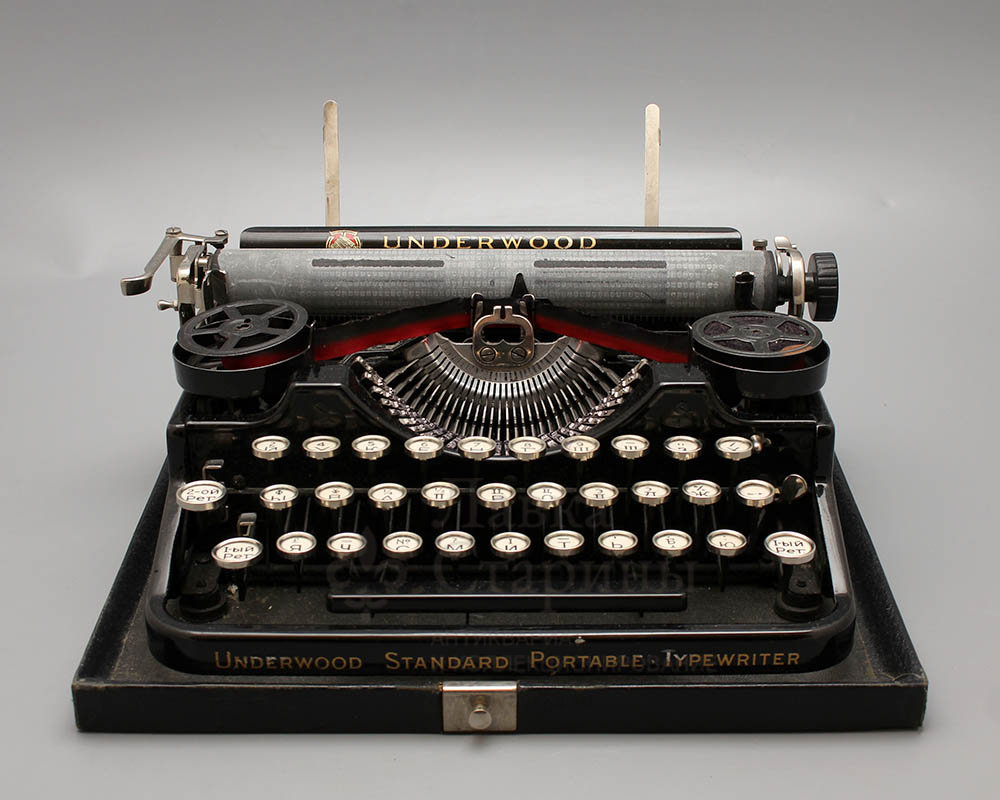
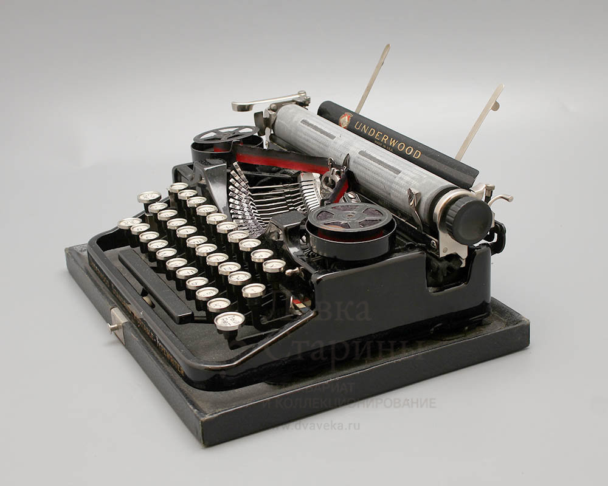

Клавіатура - це зовнішній інструмент, який представлений набором клавіш, вони повинні відповідати за введення інформації на комп’ютер або пристрій за допомогою різних символів, включаючи літери, цифри та символи. Клавіатура - це прямий розвиток машинок, які використовувались під системою клавіш або кнопок, що виконували роль механічних важелів або електронних перемикачів. Ці машини відправляли інформацію на старі комп’ютери, на клавіатурі все інакше, тому що вона підключається до комп’ютера або, у випадку ноутбуків, вона інтегрується в них.
Як уже згадувалося раніше, це пристрій, що складається з набору клавіш, які можуть представляти різні пристрої, інструменти чи машини, і може бути ПК-клавіатурою, інструментальною клавіатурою або типом віртуальної клавіатури, досить поширеним у пристроях Android. Для позначення цього пристрою іспанською мовою використовується цей термін, але клавіатура англійською мовою - це клавіатура.
Також відомий як ПК-клавіатура, це інструмент, який використовується для передачі всілякої інформації на комп’ютери і навіть на мобільний телефон. Тут пристрій має буквено-цифрові клавіші, тобто літери, цифри та символи, включаючи розділові знаки та спеціальні клавіші, які виконують різні функції. Коли ви натискаєте клавішу, пристрій надсилає зашифровану інформацію на комп'ютер, і символ клавіші відображається на екрані.
Існують також різні музичні інструменти, які мають цей пристрій, насправді, при натисканні клавіші інструмент видає звук різними засобами, це можуть бути електронні, електромагнітні або акустичні.
Цей пристрій є периферійним пристроєм введення, який є частиною комп'ютера, крім того, він має від 101 до 108 цифр, які розділені на 4 різні блоки. Завдяки цьому користувач може безпосередньо взаємодіяти з обладнанням та здійснювати діяльність простим способом. Кожна його частина важлива для своєї роботи і буде пояснена нижче.
- Буквено-цифрові клавіші
- Цифрові клавіші
- Функціональні клавіші
- Спеціальні ключі
Клавіатура комп’ютера має дві основні функції, які називаються режимами. Перший режим - це те, де вводиться текст, а другий - командний режим, який працює за допомогою ярликів, що складаються з набору ключів, які вказують будь-якому програмному забезпеченню або операційній системі, що є замовлення на виконання завдання визначається.
Домашнє завдання (продовження)
Периферійна клавіатура має обидва режими, але існує велика кількість користувачів, які використовують цей пристрій лише для введення та ігнорування всіх його функцій, оскільки вони використовують мишу для виконання команд ПК. Використання цього пристрою для керування комп’ютером призводить до того, що рух руки до миші згасає, витрачається менше часу і підвищується ефективність роботи на ПК, словом, використання комбінацій клавіш підвищує ефективність, підвищує продуктивність, дозволяє виконувати завдання одночасно, знижує рівень стресу і дозволяє зосереджуватися на своїй роботі.
Що стосується комбінацій клавіш, для виконання певних дій можна використовувати занадто багато комбінацій клавіш, однак вам потрібно знати про кожну з цих комбінацій клавіш. Як тільки вони відомі та використовуються з кожним днем, відбувається запам'ятовування комбінацій і ефективність зростає до 100%, залишаючи осторонь і взагалі забуваючи про використання миші.
Зображення клавіатури
У цьому розділі будуть згадані та пояснені ярлики, які дійсно необхідні для користувачів комп’ютерів, починаючи з:
- CTRL + C. Це ярлик, який використовується для копіювання раніше вибраних текстів та файлів.
- Комбінація CTRL + Insert також виконує ту ж функцію, що і CTRL + C.
- Існує також комбінація CTRL + V для вставки раніше скопійованих текстів та файлів за допомогою миші або за допомогою двох попередніх ярликів. Цю функцію також можна виконати за допомогою клавіші Shift + Insert.
- Комбінація клавіш CTRL + X використовується для негайного вирізання текстів, проте текст зберігається в буфері обміну для подальшого вставлення за допомогою комбінації клавіш CTRL + V.
- Наступним ярликом є CTRL + Z, який складається з скасування будь-якої дії, яка була виконана раніше. Наприклад, якщо скопіювати та вставити текст, цю дію можна скасувати, поєднавши обидві клавіші. Важливо зазначити, що цей ярлик можна використовувати багато разів, щоб скасувати кілька раніше виконаних дій.
Старинная портативная печатная машинка «Underwood Standard Portable», США, нач. 20 в.
  Старинная портативная печатная машинка «Underwood Standard Portable» Старинная портативная печатная машинка «Underwood Standard Portable»Що таке віртуальна клавіатура на Android?
Віртуальна клавіатура, або «екранна» клавіатура, дає змогу легко та послідовно вводити текст місцевою мовою, незалежно від того, де ви знаходитесь чи який комп’ютер ви використовуєте.
Віртуальна клавіатура — онлайн-додаток для введення пароля за допомогою миші. Віртуальна клавіатура призначена для захисту вашого пароля від шкідливих «шпигунських» і «троянських програм». Використання віртуальної клавіатури зменшить ризик викрадення пароля.